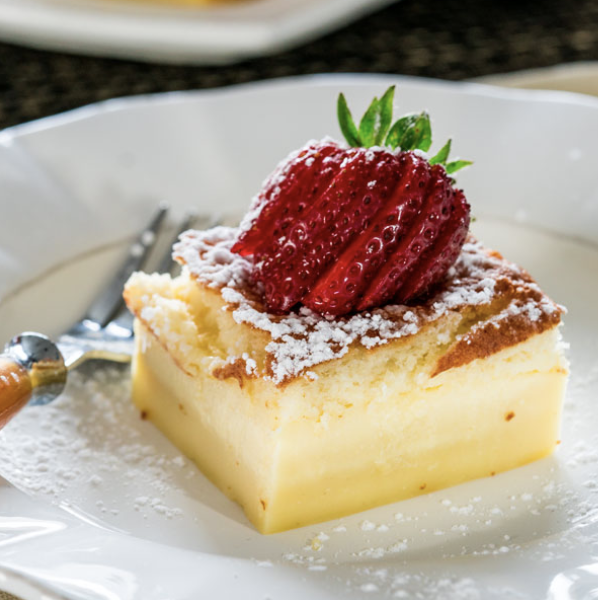

Magic Cake
One simple thin batter, bake it and voila! You end up with a 3 layer cake, magic cake.
We need to stress that whatever happens to you as a result of consuming Magic Cake is your responsibility. You've been warned, and you can view our legal page for more info.
Ingredients
- 4 eggs at room temperature
- 3/4 cup sugar
- 8 tbsp butter unsalted and melted
- 1 tsp vanilla extract
- 3/4 cup all-purpose flour
- 2 cups milk lukewarm
- powdered sugar for dusting cake
Directions
- Preheat oven to 325 F degrees. Grease a 8 inch x 8 inch baking dish or line it with parchment paper so that it's easier to get the cake out.
- Separate the eggs and beat the egg yolks with the sugar until light and fluffy. Add butter and vanilla extract and continue beating for another minute or two after which you can add the flour and mix it in until fully incorporated.
- Slowly start adding the milk and beat until everything is well mixed together.
- Add the egg whites to a mixer and mix until stiff peaks form.
- Add the egg whites to the cake batter and gently fold them in. Another variation to folding in the egg whites would be to whisk them in to the cake batter, this is a lot faster and easier. Make sure you don't fold the egg whites in completely, you still want to see some of the white bits floating at the top.
- Pour batter into baking dish and bake for 40 to 70 minutes or until the top is lightly golden. The baking time could vary greatly depending on the oven, so take a peek at around 40 minutes and see how it looks.
- Sprinkle some powdered sugar after cake has cooled.
Photos
